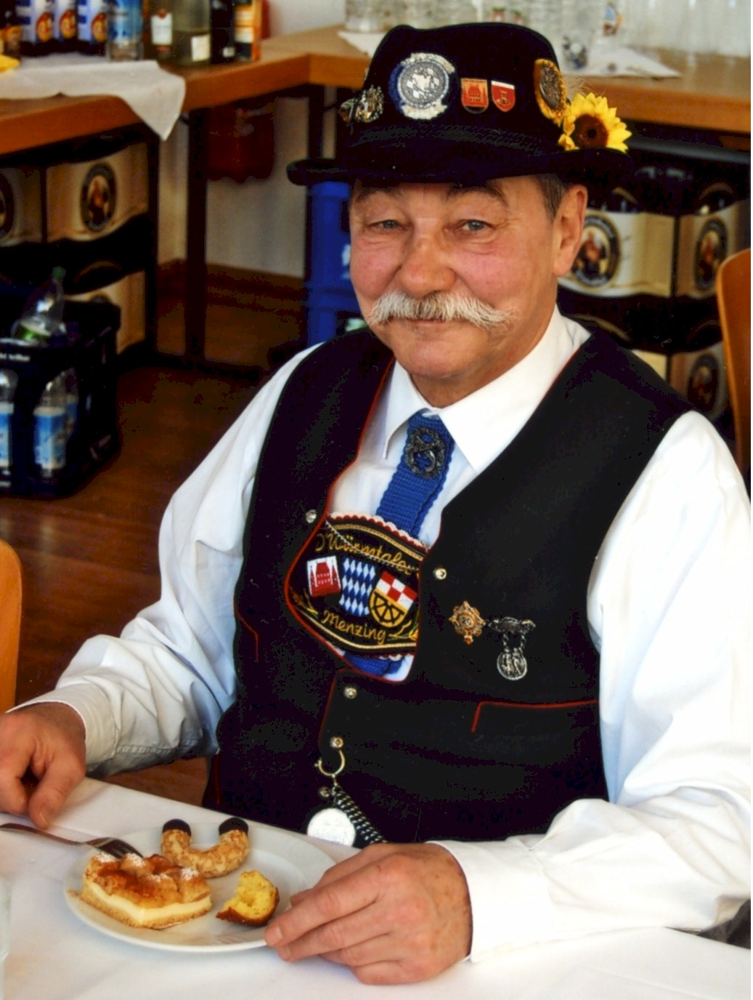

Adolf Thurner 1941 - 2020
Geboren 1941 in München besuchte er dort die Grundschule in München-Obermenzing und die Oberrealschule in München-Pasing.
Anschließend Ausbildung und sechsjährige Tätigkeit als (RADAR-) Flugsicherungslotse bei der Deutschen Bundeswehr.
In der freien Wirtschaft Ausbildungen zum Speditions- und Außenhandelskaufmann und Handelsfachwirt. Jahrzehntelange Tätigkeit im Auslandsvertrieb technischer Produkte verbunden mit vielen Auslandsreisen in Europa und Afrika.
Seit den frühen Siebzigerjahren nebenberuflich tätig in der Familien-, Hof- und Obermenzinger, dann auch Pasinger Orts- und Kirchengeschichte mit zahlreichen Publikationen in Zeitungen, Fachzeitschriften und Büchern; Autor, Mitautor und auch Herausgeber von diversen mundartlichen und heimat-/kirchengeschichtlichen Werken im Bereich des Münchner Westens.
Auch Vorträge bei Vereinen, Institutionen und der Münchner Volkshochschule sowie Kirchen- und Stadtteilführungen wurden von ihm durchgeführt.
Auszeichnungen und Ehrungen:
19.11.1988: Ehrenmitgliedschaft im Heimat- und Volkstrachtenverein "D'Würmtaler" Menzing e.V. für außerordentliche Verdienste um die Förderung der Vereinsziele
18.12.1988: DSKBiB-Ehrenkreuz in Anerkennung besonderer Verdienste um die Soldatenkameradschaft in der Veteranen- und Reservisten-Kameradschaft Obermenzing e.V. im Deutschen Soldaten- und Kameradschafts-Bund in Bayern e.V.
10.12.1992: DSKBiB-Verdienstkreuz II. Klasse in Anerkennung der besonderen Verdienste um die Veteranen- und Reservisten-Kameradschaft Obermenzing e.V. im Deutschen Soldaten- und Kameradschafts-Bund in Bayern e.V.
21.01.1995: Ehrennadel in Gold in Anerkennung und Würdigung der besonderen Verdienste um die Veteranen- und Reservisten-Kameradschaft Obermenzing e.V. im Deutschen Soldaten- und Kameradschafts-Bund in Bayern e.V.
18.01.1996: BSB-Verdienstkreuz I. Klasse in Anerkennung besonders hervorragender Verdienst um die Veteranen- und Reservisten-Kameradschaft Obermenzing e.V. im BSB 1874 e.V.
21.02.1997: Ehrenmedaille in Silber des Heimat- und Volkstrachtenvereins "D'Würmtaler" Menzing e.V. für besondere Verdienste um das Carlhüusl in Obermenzing und die Fürderung der Vereinsziele
20.02.1998: Ehrenmedaille in Gold des Heimat- und Volkstrachtenvereins "D'Würmtaler" Menzing e.V. für außergewöhnliche Verdienste um das Carlhäusl in Obermenzing und die Förderung der Vereinsziele
25.10.1998: BSB-Verdienstnadel mit Goldenem Eichenkranz in Anerkennung der hervorragenden Verdienste um die Veteranen- und Reservisten-Kameradschaft Obermenzing e.V. im BSB 1874 e.V.
28.10.1999: Kulturpreis des "Club der 99 Narrischen Würmtaler", 82152 Planegg bei München, in Anerkennung der kultur- und stadtteilhistorischen Arbeiten
25.04.2001: Bezirksmedaille in Bronze des Reg. Bezirks Oberbayern, München, für Verdienste um die Heimatpflege im Bezirk Oberbayern
24.10.2006: Verdienstmedaille des Verdienstordens der Bundesrepublik Deutschland für besondere Verdienste (in der Heimatforschung und deren Publikation)
02.03.2007: Ehrenabzeichen "Obermenzinger Dorfschreiber" des Heimat- und Volkstrachtenvereins "D'Würmtaler" Menzing e.V. für besondere Verdienste in der Heimatforschung
26.11.2013: Großes Verdienstkreuz in Gold des BSB 1874 (Bayer. Soldatenbund) in Anerkennung der hervorragenden Verdienste
im Dez. 2013: Ehrenmedaille für 25 Jahre treue Mitgliedschaft und fürderung der Vereinsziele des HuVTV Heimat- und Volkstrachtenvereins "D'Würmtaler" Menzing e.V.
*****